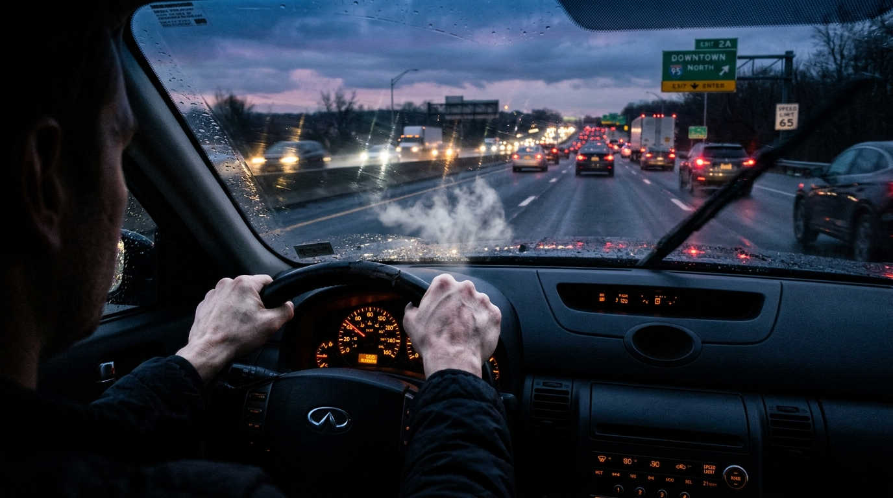
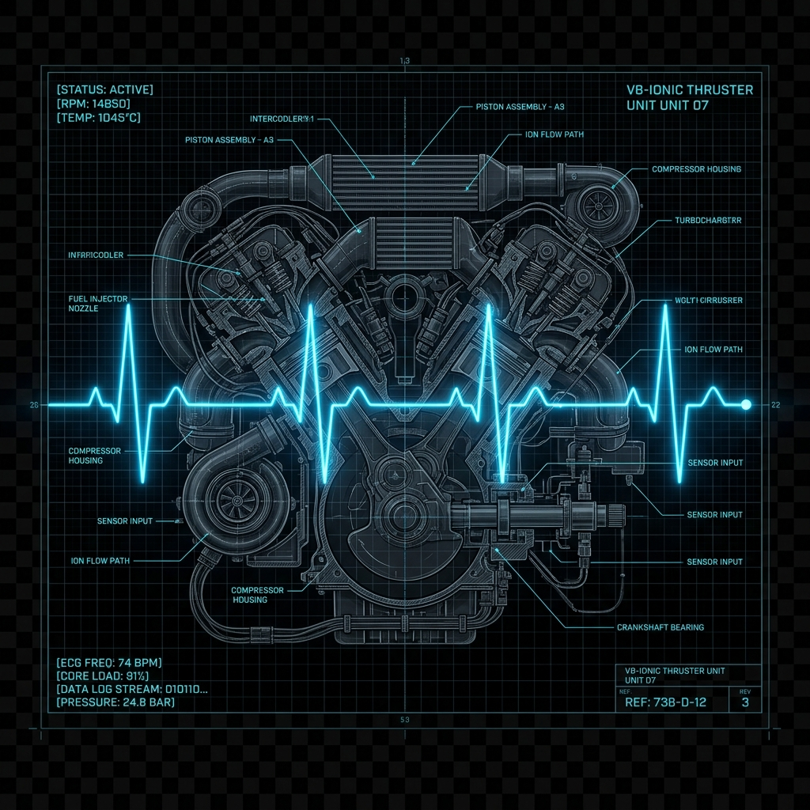
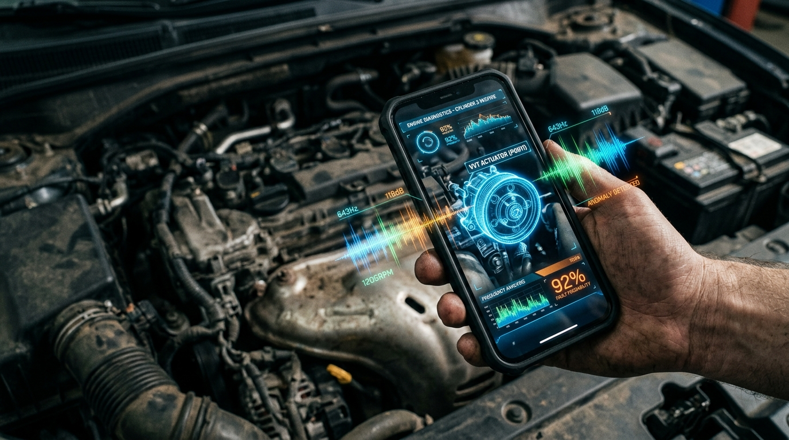
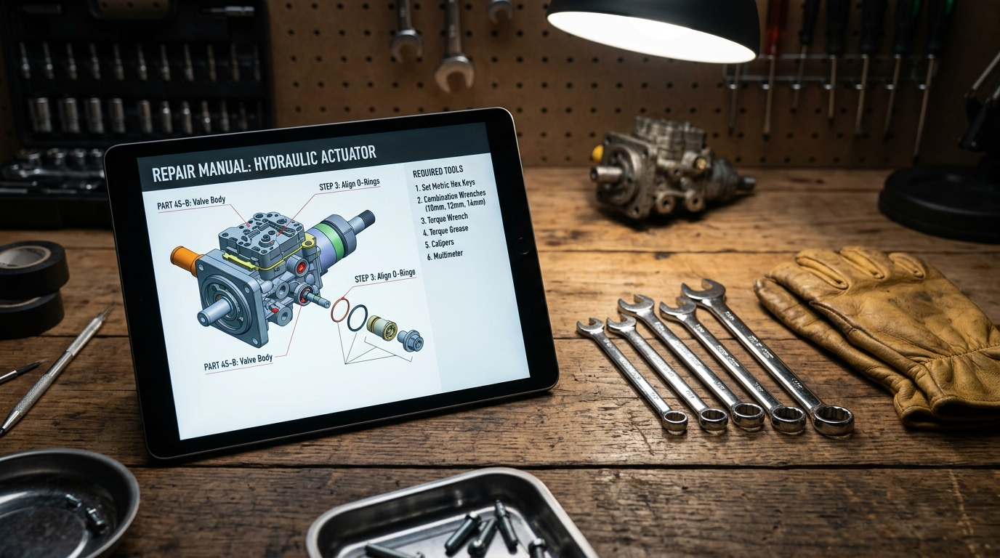
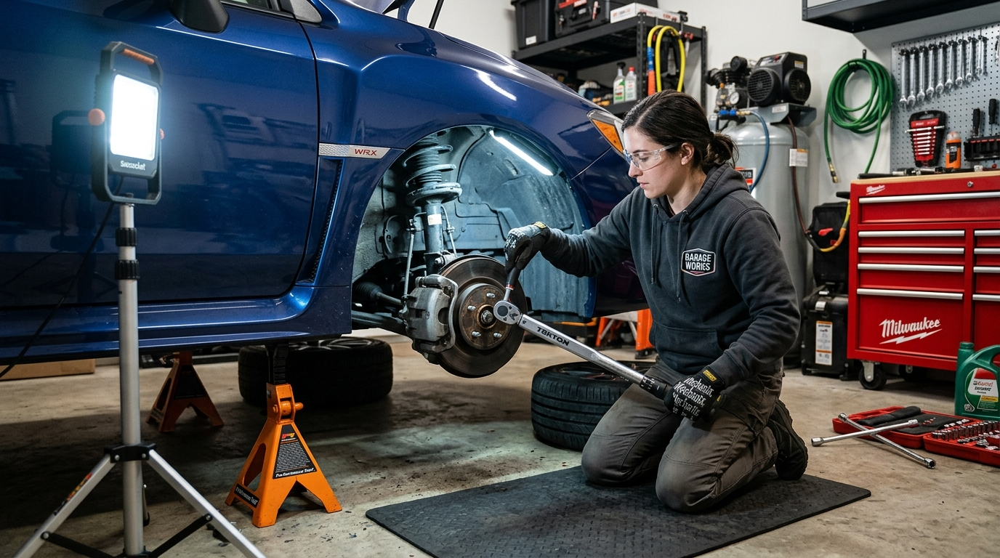

**Title:** The Death of the Black
Box:
Take Back Your Independence
with Listen & Fix

You know the feeling.
You’re driving down the highway with your family, or you’re halfway through a week’s worth of laundry, when you hear it.
*Clunk. Squeal. Grind.*Your stomach drops. Your pulse spikes. It’s not just the fear of a $500 repair bill—it’s the terrifying realization that you are completely at the mercy of a machine you don’t understand. In that moment, you are vulnerable. You’ll have to tow it, wait in a fluorescent-lit waiting room, and nod politely while a mechanic uses technical jargon to justify draining your bank account.
For decades, corporations have designed our cars and appliances to be impenetrable "black boxes." They stripped away our self-reliance.
**It’s time to take your power back.**
**A Master Mechanic in Your Pocket**
Meet Listen & Fix. We built an AI-powered "Shazam for Engines" because we believe no one should ever feel helpless when their equipment breaks.
Imagine pointing your phone at a rattling engine and letting it simply "listen." In seconds, Listen & Fix doesn't just guess what’s wrong—it *knows*.
Using multimodal intelligence, it hears the subtle frequency shifts of a failing bearing. It sees the microscopic fraying on a fan belt through your camera. It fuses sight and sound with the precision of a master mechanic who has spent 40 years under the hood. Suddenly, that terrifying mechanical mystery is translated into plain, empowering English.



**The End of the Guessing Game**
We don’t just leave you with a diagnosis and a generic Google search. Listen & Fix operates as your "Digital Foreman." The second it identifies the problem, our system scours the deepest corners of the internet, stripping away ads, forum arguments, and filler. It hands you the exact, manufacturer-verified service manual for your specific machine—like a scrub nurse handing a scalpel to a surgeon.
It tells you exactly what tools you need. It locates the exact parts at the cheapest local hardware store. And most importantly, it wraps you in a safety net. Before you touch a single bolt, it walks you through locking out circuit breakers and placing jack stands. If a job is genuinely too dangerous, it tells you. It gives you the courage to start, and the wisdom to stay safe.
**The Pride of the Fix**
We designed Listen & Fix to be a calm, professional sanctuary. No messy interfaces, no blinking ads. Just a perfectly calibrated digital workspace designed for greasy hands and dimly lit garages.
Because at the end of the day, Listen & Fix isn't about AI, data pipelines, or technology. It’s about the grease under your fingernails. It’s about the profound, chest-swelling pride of turning the key and hearing an engine roar back to life, knowing *you* did that.